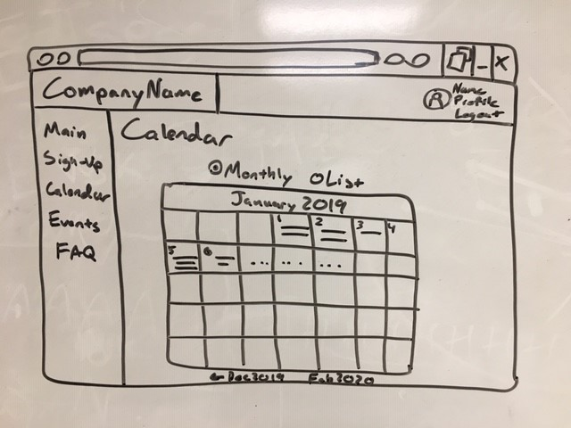
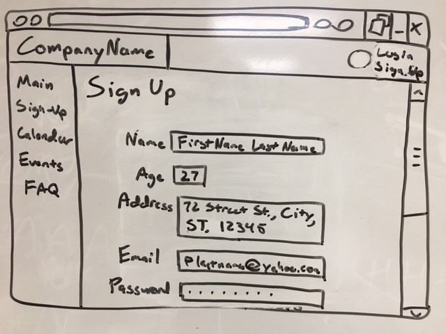

As any user, I need a page with a calendar so that I can keep track of upcoming events to volunteer at.
As any user, I need a form to sign up for an account so that I can create an account that can either administrate or volunteer for the company.
 Back to Main